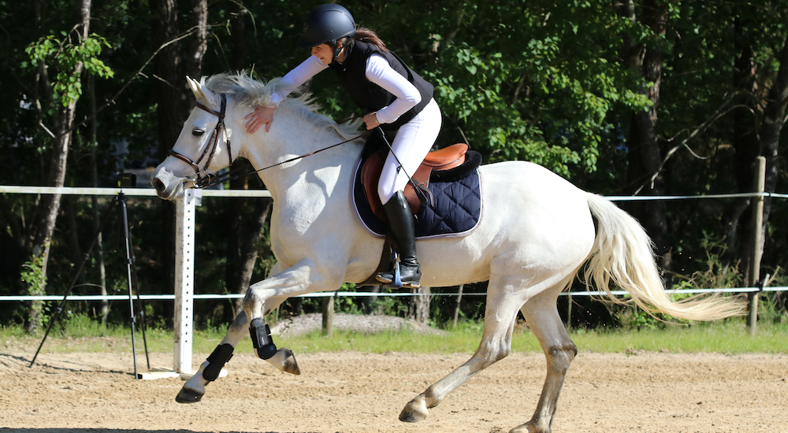
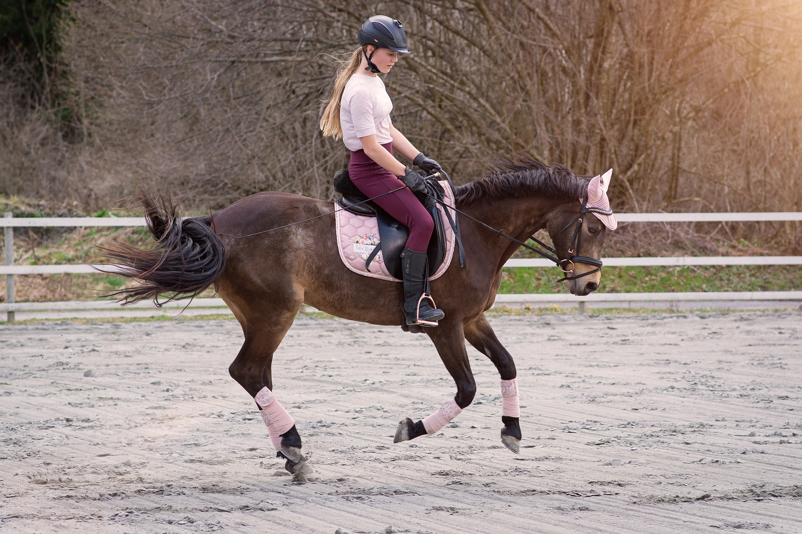
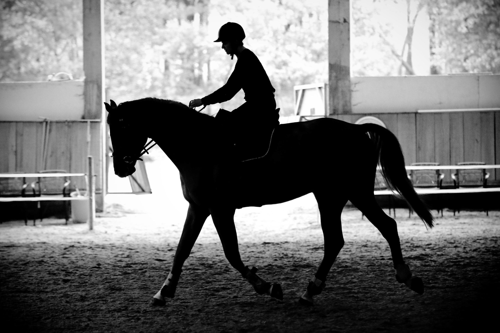
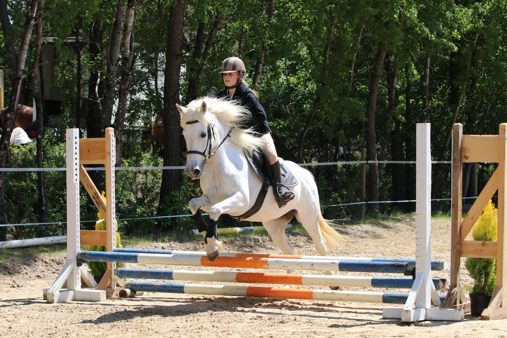
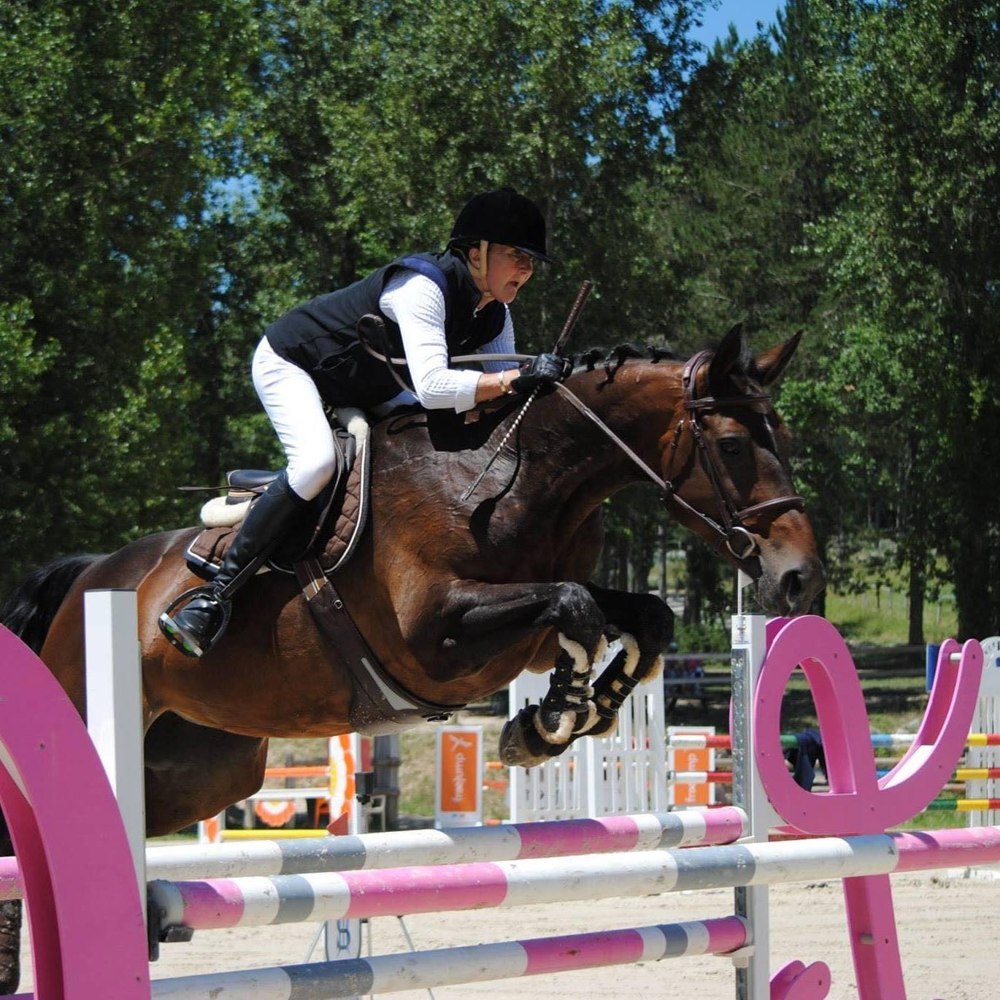
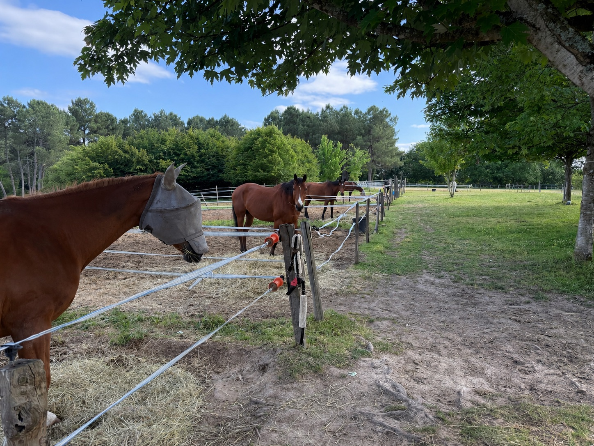
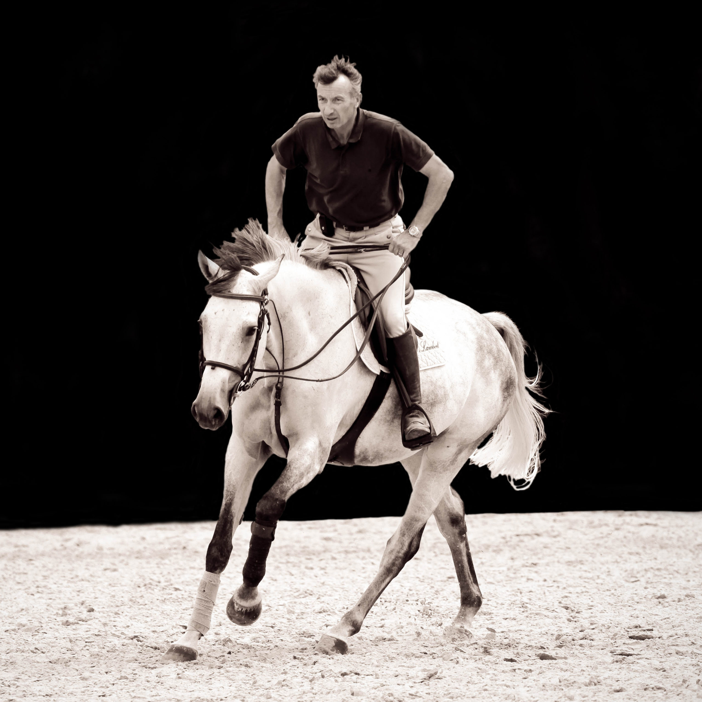

Cours collectifs
Cours en groupe par niveau, du débutant au galop 7. Une dynamique de classe pour progresser à plusieurs.

Que votre objectif soit du loisir occasionnel ou une formation de cavalier intensive, les Écuries du Grand Vignoble vous accueillent à bras ouverts.
Cours collectifs et particuliers, dressage et saut d'obstacles : choisissez le format qui vous correspond.
Cours en groupe par niveau, du débutant au galop 7. Une dynamique de classe pour progresser à plusieurs.

Leçons individuelles, programme sur-mesure. Idéal pour préparer un examen ou un concours.

Travail sur le plat, gymnastique du cheval, finesse des aides. La base de toute pratique sérieuse.

Du premier cavaletti aux parcours de concours. Initiation, perfectionnement, préparation aux compétitions.

Passage des galops 1 à 7, préparation aux examens fédéraux, sorties en concours : chaque cavalier suit sa progression à son rythme, avec un accompagnement individualisé même en cours collectif.
Évaluer mon niveau
Sous la direction de Jacques Lambert, cavalier professionnel, les Écuries forment depuis des années des cavaliers qui sortent en concours. Une exigence partagée, dans la convivialité.
Rejoindre l'équipe
Une cavalerie adaptée à tous les niveaux et tous les âges. Les cavaliers débutants adultes sont les bienvenus.

Cavalier professionnel, formateur, jury d'examen BPJEPS : Jacques accompagne chaque cavalier, du tout premier galop au saut d'obstacles de haut niveau.
Une séance d'essai pour évaluer votre niveau et trouver la formule qui vous correspond.